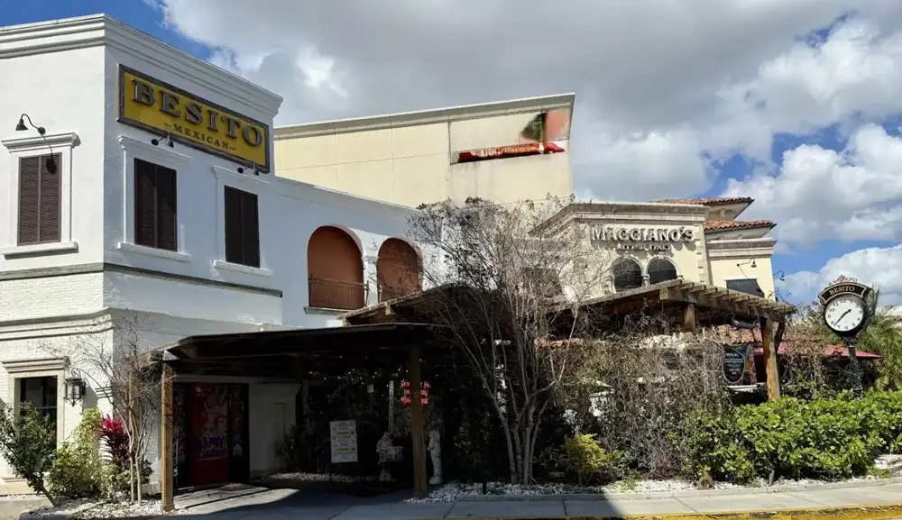
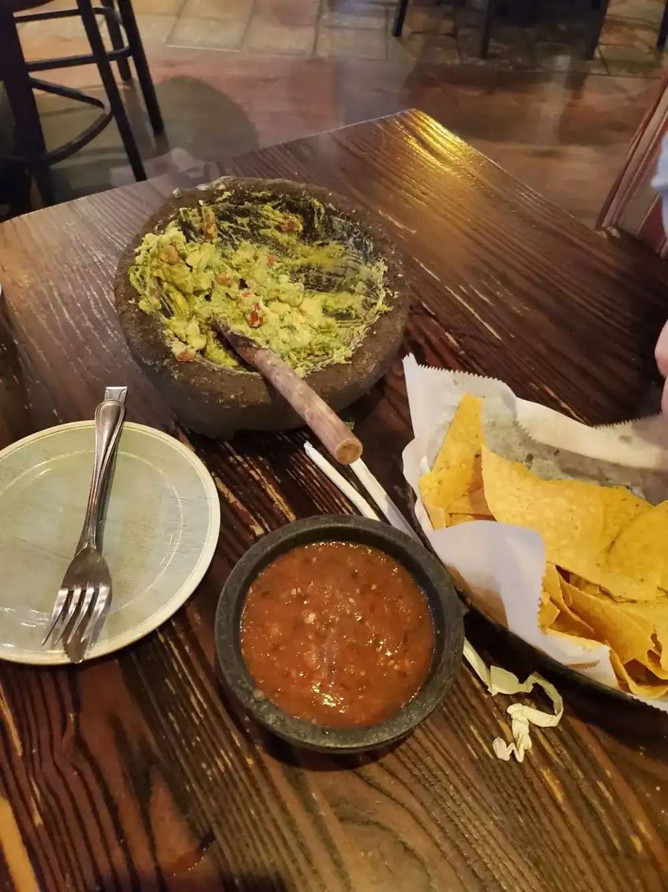
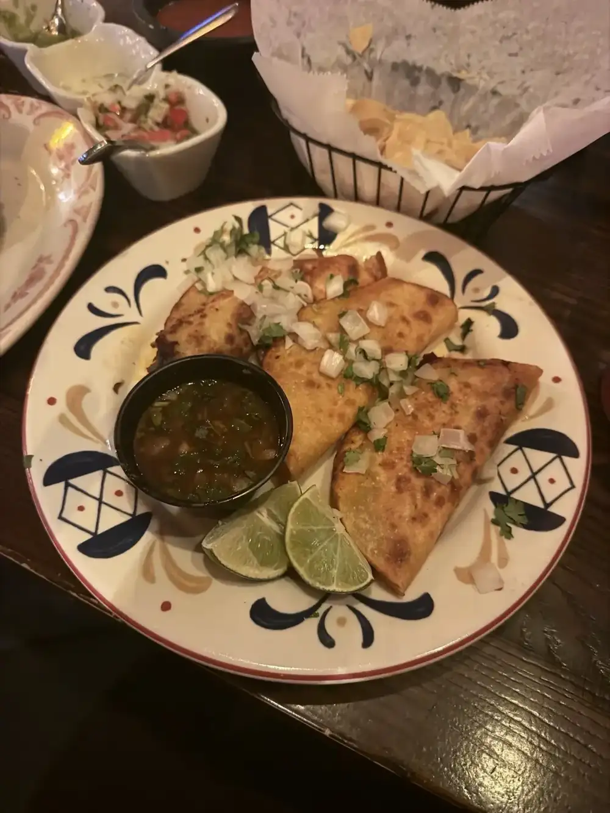
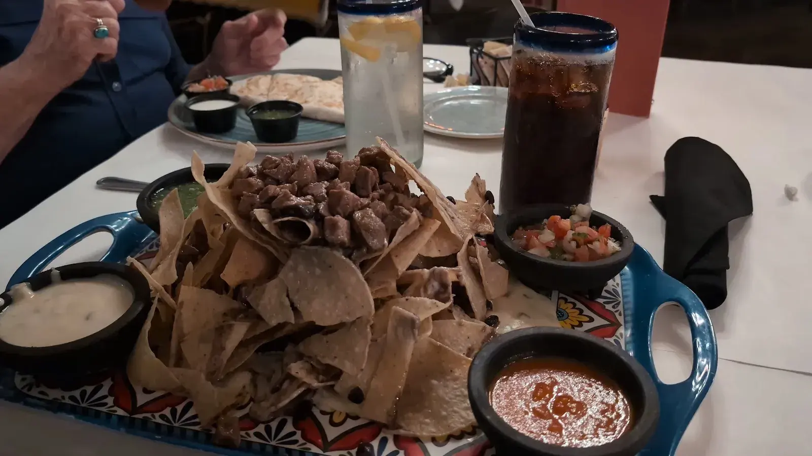
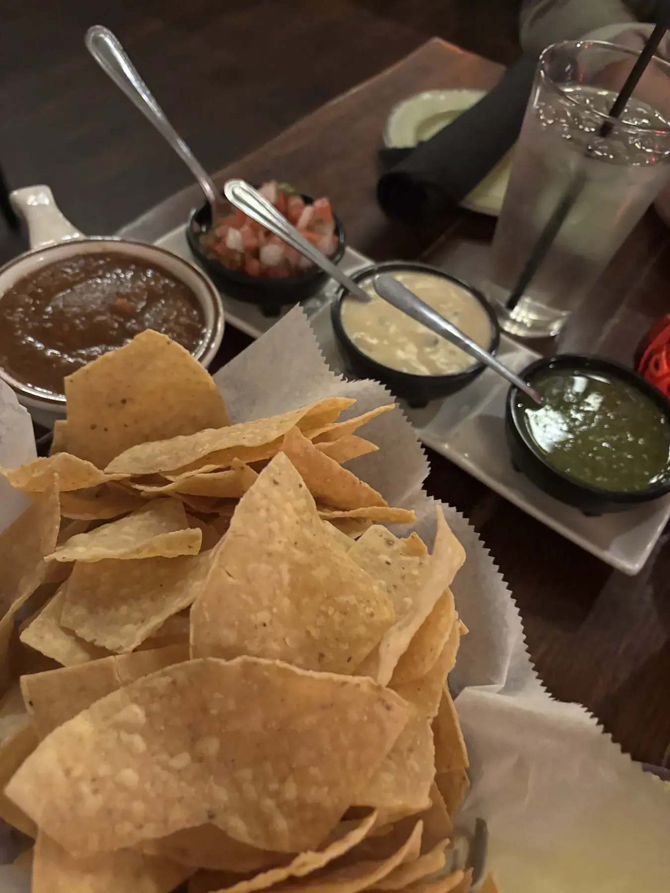
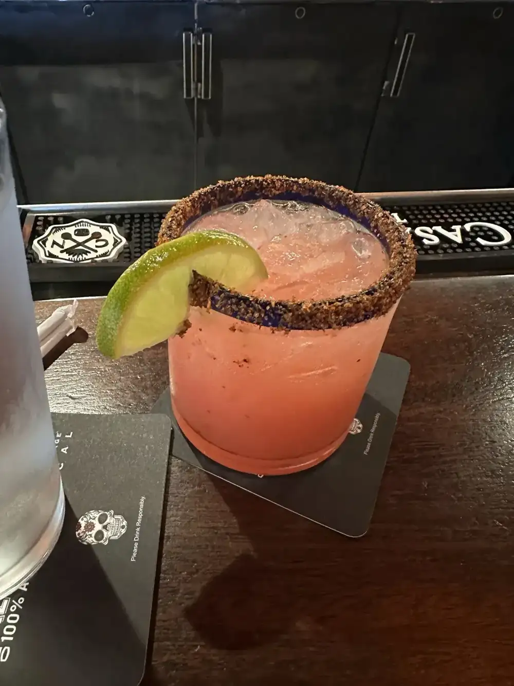
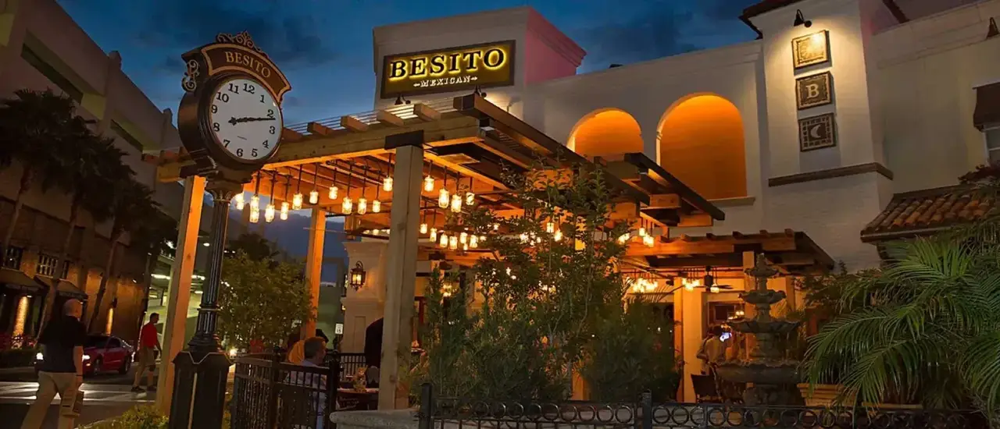

Tampa, FL
Tampa, FL
Tacos
Birria, carne asada, al pastor and street tacos. One guest says the birria and the al pastor are both worth ordering.
Mexican restaurant · WestShore, Tampa
Birria tacos, street tacos, handmade margaritas and 100+ tequilas, served with the warmth of a private hacienda near Westshore and Kennedy.

What guests keep telling us
What guests write home about.
Birria, carne asada, al pastor and street tacos. One guest says the birria and the al pastor are both worth ordering.

Fresh guacamole made at your table, with chips and salsa. A guest called it a must.

Skinny passion fruit margaritas, handmade cocktails and over 100 tequilas to choose from.






4.5 ★ · 5591 Google reviews
In town for 3 nights and staying at a hotel across the street, this restaurant caught our eye, so we decided to check it out. Loved it so much, we went back the next evening, too! Skinny margaritas, tableside guacamole, and quesadilla with steak. Selena was our server tonight, super pleasant and attentive, went above and beyond, made our guacamole exactly to our liking!
First time here and won’t be our last! It was worth the drive for us from Fishhawk! Selena was very attentive and one of the best servers we have had. The overall atmosphere was great. Decor beautiful and bathrooms super clean! Table side Guacamole is a MUST! The mini churros at the end were a delicious touch! Can’t wait to back and thank you Selena for making our experience great!
First time here and definitely coming back soon! Love the latin music, we had guacamole and chips for appetizer with skinny passion fruit margaritas for the first round, to eat we had Birria tacos, carne Asada tacos, Tijuana bowl, then we had 2 mexicolada! (Delicious) ,our sever Erika was super sweet,helpful and very patient with us.! Bathroom are clean

Hello, we're
Besito, which means little kiss, is in WestShore Plaza near I-275, at Westshore and Kennedy, minutes from Tampa International Airport, International Plaza and Raymond James Stadium.
Our table side guacamole, cocktail list and tequila shelf are what people come for. We love that Mexican ingredients have always been local and fresh, and that the most treasured asset in Mexico is family.
Pick up at
205 Westshore Plaza, Tampa, FL 33609
Happy hour runs Monday to Friday, 3 to 6 PM, with margaritas 2x1. Brunch is served 11:30 AM to 3 PM, and Taco Tuesday comes with a free drink for each order of tacos.